In China Employee Termination: Pulse Ops War-Game Brief for Foreign Employers (2026 Testing Run)
Key takeaways
- Treating termination planning as an ops war-game helps foreign employers catch failures before employee-facing execution.
- Legal route clarity should lead, then be stress-tested against evidence, communication, and settlement scenarios.
- Most avoidable disputes come from process breaks under pressure, not from policy wording alone.
- Payroll and IIT close-out should be tested in pre-mortem drills, not left for final-stage handling.
- War-game outputs create actionable controls for HR, managers, payroll, and legal teams.
Pulse lead: what matters now
Foreign employers managing China terminations often know the legal basics but still face costly disputes because execution breaks when pressure rises. A case looks fine in static review, then fails in motion: a manager uses unscripted language, records are inconsistent, or settlement numbers shift after communication. The legal framework is familiar; execution resilience is not.
This run uses an ops war-game format. Instead of describing ideal process only, it simulates high-friction moments and tests whether your operating model holds. The value for non-local decision makers is practical: you can assess readiness before risk becomes public or adversarial.
Plain-language legal/regulatory context first
China’s Labor Contract Law sets termination boundaries, while implementation regulations and judicial interpretations shape dispute review in practice. For foreign employers, this means legal route validity is only the entry condition. Defensibility depends on consistent behavior across route rationale, evidence integrity, communication process, and settlement execution.
War-gaming is useful because it tests that consistency under stress, where many failures actually happen.
War-game board: four stress scenarios
Scenario 1: Route under pressure
Stress event: HQ asks for immediate action before full evidence review.
Win condition: route memo completed with legal anchor, risk grade, and explicit signoff path.
Fail condition: route rationale changes across stakeholders.
Scenario 2: Communication breakdown
Stress event: manager deviates from approved script in live meeting.
Win condition: HR-owned meeting control, consistent written package, rapid corrective protocol.
Fail condition: script-document contradiction enters record.
Scenario 3: Settlement shock
Stress event: payroll identifies severance/IIT discrepancy after notification prep.
Win condition: settlement model lock with version control before any final communication.
Fail condition: post-notice recalculation and unclear explanations.
Scenario 4: Refusal + escalation
Stress event: employee refuses acknowledgment and threatens immediate claim.
Win condition: pre-approved refusal protocol, witness process, alternative lawful service, legal escalation path.
Fail condition: ad hoc responses and incomplete evidence trail.
Practical implications for foreign employers
- Readiness is not “policy exists”; readiness is “scenario survives.”
- War-game outputs should feed SOP updates and system fields.
- Cross-functional role clarity matters more than legal memo quality alone.
- Multi-city teams should run city-specific war-game assumptions quarterly.
For overseas leadership, this format also improves governance transparency: instead of relying on general confidence statements, teams can present scenario pass/fail evidence and specific remediation plans. That allows faster escalation decisions and reduces the risk of last-minute disagreement between local HR, regional legal, and headquarters decision-makers.
Daily operations SOP (role-by-role)
Gate 1: pre-mortem setup (HR + legal)
Define route, legal basis, risk grade, and stress scenarios for the case.
Gate 2: evidence stress check (Manager + HR)
Test whether records remain coherent under challenge and chronology review.
Gate 3: settlement stress check (Payroll + finance + HR)
Validate payout logic and IIT treatment under timing pressure; lock version.
Gate 4: communication stress check (HR + manager + legal)
Run mini-drill for meeting script, refusal protocol, and escalation path.
Gate 5: controlled execution (HR owner)
Execute with timestamped event log for meeting, service, payroll trigger, and documentation.
Gate 6: after-action review (Legal + HR + payroll)
Within 48 hours, review scenario outcomes, close gaps, and archive evidence.
Required document checklist
- Route memo + risk grade
- War-game scenario sheet
- Evidence index + integrity review
- Communication package + refusal script
- Settlement worksheet + version record
- Approval chain + event log
- Final-pay/IIT proof
- After-action note + archive manifest
Exception handling playbook
Scenario fails during drill
Pause execution and remediate before employee-facing action.
New facts invalidate route during execution window
Reopen route memo, rerun war-game checks, reapprove path.
HQ requests override of failed scenario gate
Escalate via documented risk acceptance; defer without authorized signoff.
System implementation notes
Add war-game controls to HRIS/payroll:
- Scenario pass/fail flags
- Stress-failure reason codes
- Settlement lock status + IIT logic note
- Escalation path and approver trail
- Event-log link to final documents
- After-action closure status
Common mistakes and prevention
Mistake: no stress testing before action
Prevention: mandatory pre-mortem scenario run.
Mistake: treating communication risk as soft risk
Prevention: script drills with accountable owner.
Mistake: settlement checks happen too late
Prevention: settlement lock before final notice prep.
Mistake: lessons are not operationalized
Prevention: after-action findings mapped to SOP and system fields.
What to do now
- Add a four-scenario war-game to every termination case.
- Require pass on all scenarios before execution.
- Run a 20-minute script-and-refusal drill with managers.
- Lock settlement and IIT model before communication.
- Add city-specific assumptions to scenario templates.
- Capture after-action findings within 48 hours.
- Audit recent cases for scenario failure patterns.
- Update SOPs and controls from findings.
- Report monthly scenario pass rates to leadership.
- Repeat war-game refresh each hourly quality cycle.
War-game scorecard for leadership
Track three indicators monthly: scenario pass rate before execution, average remediation time for failed scenarios, and post-action exceptions linked to scenario categories. These metrics keep the war-game program practical and prevent it from becoming a one-time compliance ritual.
What to watch next
- Continued importance of process coherence under pressure.
- Ongoing risk from payroll/tax ambiguity in final settlement.
- Persistent local variance requiring tailored assumptions.
- Growing value of measurable readiness controls in cross-border governance.
FAQ
Is war-gaming required under China law?
No. It is a governance method for improving execution quality and defensibility.
Can strong legal drafting replace stress tests?
Not reliably. Many disputes originate in execution behavior under pressure.
Why include payroll in war-game scenarios?
Because settlement and IIT errors frequently trigger or expand claims.
Is this too heavy for smaller entities?
No. Scenario set can be scaled while preserving pass/fail discipline.
When should external PRC counsel be mandatory?
High-risk unilateral routes, restructuring actions, refusal events, protected-sensitivity cases, and multi-city complexity.
Legal depth appendix (secondary)
This brief is anchored on the PRC Labor Contract Law, State Council implementation regulations, and SPC labor-dispute interpretation guidance. Combined, they support one practical principle: route legality, procedural fairness, and documentary reliability must remain aligned from decision through settlement completion.
Disclaimer
This content is informational only and not legal advice. China labor outcomes are fact-specific and locally sensitive. Seek qualified PRC legal advice before action.
Sources
- National People’s Congress. Labor Contract Law of the PRC (English). http://www.npc.gov.cn/zgrdw/englishnpc/Law/2007-12/13/content_1384064.htm (accessed 2026-03-01).
- State Council. Regulations for the Implementation of the Labor Contract Law (Decree No. 535). https://www.gov.cn/gongbao/content/2008/content_1124615.htm (accessed 2026-03-01).
- Supreme People’s Court. Interpretation on labor dispute application issues (Fa Shi [2020] No. 26). https://www.court.gov.cn/fabu/xiangqing/243981.html (accessed 2026-03-01).
- China Briefing (Dezan Shira & Associates). Employee Termination in China (updated 2025-10-17). https://www.china-briefing.com/news/employee-termination-in-china/.
- Littler. Key Recent Developments in China’s Employment Law (2024-03-20). https://www.littler.com/news-analysis/asap/key-recent-developments-chinas-employment-law-china-us-comparative-perspective.
- PwC Worldwide Tax Summaries. People’s Republic of China: Individual Taxes on Personal Income (2025-01-15). https://taxsummaries.pwc.com/peoples-republic-of-china/individual/taxes-on-personal-income.
Need help from China-Payroll.com?
China-Payroll.com supports foreign employers with compliance-first termination operations, integrating legal route governance, payroll settlement certainty, and evidence-ready execution controls.
Need local employment support in China?
If you need a compliance-first partner for hiring, payroll, and risk controls in China, China-Payroll.com can help evaluate the right setup.
Image Prompt Pack
Create a 16:9 hero image for article title: 'In China Employee Termination: Pulse Ops War-Game Brief for Foreign Employers (2026 Testing Run)'. Scene: global operations team evaluating workforce model options for China market entry. Include motifs: decision ma…